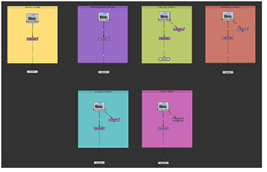
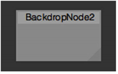
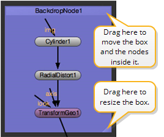
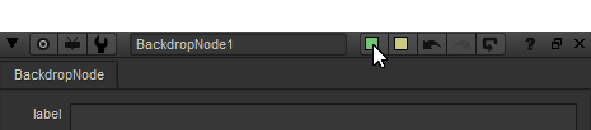
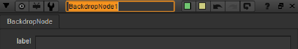
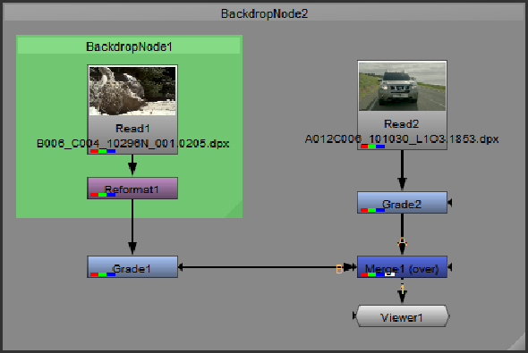

You can use the Backdrop node to visually group nodes in the Node Graph. Inserting a Backdrop node creates a box behind the nodes. When you move the box, all the nodes that overlap the box are moved, too. By inserting several backdrop nodes, you can group the nodes in your node tree onto boxes of different colors and titles. This makes it easier to find a particular node in a large node tree, for example.
You can also use the Z Order control in the Properties panel to layer-up Backdrop nodes. Backdrops with lower Z Order values appear underneath those with a higher value.
|
 |
|
Nodes grouped in the Node Graph |
| 1. | Select Other > Backdrop. A Backdrop node box appears in the Node Graph. |

| 2. | Drag the triangle in the lower right corner of the box to resize the box as necessary. |
| 3. | Click on the box title bar and drag it to move the box behind the nodes you want to group together. If there are any nodes on the box, they move together with the box. |

| 4. | To change the color of the box, open the Backdrop node’s controls by double-clicking on the title bar, then click the left color button and pick a new color with the color picker that appears. |

| 5. | To change the title of the box, enter a new name for the Backdrop node in the node’s controls. |

| 6. | To layer-up Backdrop nodes, enter a value in the Z Order control in the Properties panel. Backdrops with lower Z Order values appear underneath those with a higher value. |

| 7. | If you later want to remove both the box and the nodes inside it, click on the title bar and press Delete. Ctrl/Cmd+clicking on the title bar and pressing Delete only removes the box and leaves the nodes untouched. To remove the nodes and leave the box untouched, click on the triangle in the lower right corner of the box and press Delete. |
TIP: You may want to use Backdrop nodes as jump-to points throughout a project. For more information, see Navigating Inside the Node Graph.
|
|